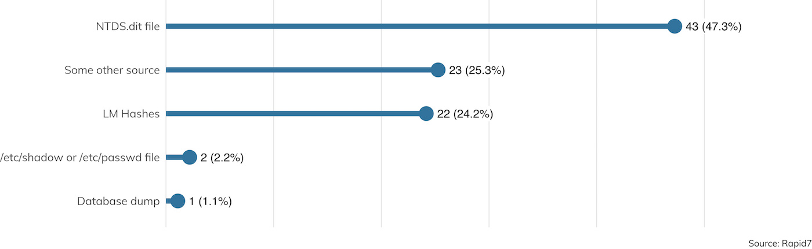

Introduction
Es ist Sommer 2019! [1] Und das bedeutet: Es ist wieder einmal Zeit für Rapid7s „Under the Hoodie“, unsere jährlich erscheinende statistische Untersuchung zur Kunst des Penetrationstestens. Penetrationstests fristen im Bereich der Informationssicherheit nach wie vor ein relatives Nischendasein. Selbst die am stärksten ausgelasteten Tester führen pro Jahr selten mehr als 20 Aufträge aus, deren Ergebnisse fast immer geheim bleiben und durch strenge Vertraulichkeitsvereinbarungen gesichert sind. Entsprechend schwierig gestaltet es sich häufig für den einzelnen Interessierten, einen allgemeinen Querschnitt der Penetrationstest-Branche zu erhalten. Dieser jährliche Bericht, der nun bereits zum dritten Mal erscheint, stellt einen Teil der Bemühungen von Rapid7 dar, die Inhalte eines typischen Penetrationstests klar darzustellen und Kunden wie Testern einen Überblick darüber zu geben, was sie im Verlauf eines Einsatzes erwartet.
Von Mitte September 2018 bis Ende Mai 2019 haben wir über einen Zeitraum von neun Monaten die Daten von 180 Penetrationstests gesammelt. Seit unserem letzten Bericht haben wir eine brandneue Umfrage mit 94 Fragen erstellt, die den Penetrationstestern ermöglicht, rasch qualitativ hochwertige Daten zu sammeln. Diese Umfrage, die in Anhang B näher beschrieben wird, behandelt nicht nur die übliche interne und externe Analyse des Netzwerks, sondern auch physisches Eindringen, persönliche und elektronische Social-Engineering-Techniken und Source Code Analysen jenseits des Entwicklungskontextes. Zu den wichtigsten Ergebnissen gehören folgende Punkte:
- Bei den meisten Aufträgen (96 %), die entweder eine Netzwerk- oder eine Anwendungsanalyse umfassten, kam mindestens eine Schwachstelle zutage, die Angreifer ausnutzen konnten. Wir fanden uns dadurch in unserer Ansicht bestätigt, dass Penetrationstests ein wesentlicher Bestandteil einer ganzheitlichen Schwachstellenmanagement-Strategie sind.
- Passwortmanagement stellt selbst für die technisch ausgereiftesten IT-Sicherheitsorganisationen eine Herausforderung dar. Bei fast drei Vierteln (72 %) der Aufträge, die das Erbeuten von Zugangsdaten beinhalteten, wurde mindestens ein Passwort offengelegt. Davon waren 60 % leicht zu erratende Passwörter, für die der Penetrationstester Password Spraying mit generischen Passwörtern, bekannten Standardpasswörtern und leicht zu erratenden firmenspezifischen Passwörtern durchführte.
- Doch es gibt auch Grund für Optimismus. Grundlegende Netzwerksegmentierung zwischen „internen” und „externen” Netzwerken scheinen allgemein Wirkung zu zeigen, besonders angesichts des fortwährenden Umzugs extern zugänglicher Ressourcen in die Cloud. Studienteilnehmer, die einen externen Angriff ausführten, konnten nur in 21 % aller Fälle ins interne LAN eindringen. Speziell gegen Webanwendungen gerichtete Angriffe endeten fast nie (weniger als 3 % aller Fälle) in einer Gefährdung des ganzen Standortes. Die meisten Webanwendungen (über 70 %) wurden nicht im Rechenzentrum des Kunden gehostet. Dadurch wird dem Angreifer der Weg über eine kompromittierte Webanwendung erheblich erschwert.
Mit diesen Kernaussagen im Hinterkopf wird sich der Rest dieses Berichts mit der Untersuchung der Daten befassen, die wir in unserer jüngsten Testsaison sammeln konnten. Zudem werden darin auf realen Erfahrungen basierende Beispielfälle wiedergegeben. Unser Ziel ist es, dass Sie nach dem Durchlesen dieses Berichts ein grundlegendes Verständnis dafür gewonnen haben, wie Penetrationstester Organisationen bei der Identifizierung ihrer spezifischen und allgemeinen IT-Risiken unterstützen können.
___________________________________________
[1] Wenn Sie einen unangenehmen Stich verspürt haben, als Sie im Einleitungssatz Ihr Passwort „Sommer2019!“ gelesen haben, wird es Zeit, Ihre Algorithmen für die Passwortauswahl zu ändern.
Leserinnen und Leser unserer vergangenen Berichte werden sich erinnern, dass wir früher unsere Auftragsrahmen in zwei große Bereiche unterteilt haben:
- Externe Analysen, bei denen der Penetrationstester im Internet beginnt und die Webanwendungen, VPN- und Datei- Server und sonstige aus dem Internet erreichbare Systeme des Kunden ins Visier nimmt
- Interne Analysen, bei denen der Tester sich hauptsächlich auf Dinge wie Windows-Active-Directory-Domänen, Drucker und IoT-Integrationen sowie sonstige IT-Infrastruktur konzentriert, die (üblicherweise) keinen Kontakt zum Internet hat
Obwohl diese grobe Unterteilung wichtig ist, haben wir unsere Studie 2019 so strukturiert, dass gemischte Szenarien berücksich- tigt werden, die die (hauptsächlich imaginäre) Grenze zwischen „Innen“ und „Außen“ überschreiten. Dies schließt beispielsweise elektronisches und physisches Social Engineering, Red-Team-Übungen mit einem aktiven Verteidiger, Webanwendungen, die in der Cloud gehostet werden, sowie Code Review für Mobilanwendungen, die auf kunden- oder mitarbeitereigenen Mobilgeräten installiert werden, mit ein. Abbildung 1 schlüsselt diese allgemeinen Überlegungen zum Rahmen der durchgeführten und erfassten Tests auf.

Wie wir hier erkennen können, ist der traditionelle externe Angriff, bei dem der Kunde Schwachstellen und Risikobereiche aufdecken möchte, die mit dem Internet im Allgemeinen in Verbindung stehen, die populärste Wahl im Hinblick auf den Testrahmen. Solche Tests machten rund 40 % der erfassten Aufträge aus. Das macht Sinn, weil die meisten Kunden sich Sorgen um externe Täter machen – kriminelle Hacker, die noch keinen Zugang zum internen Netzwerk haben und nach wirksamen Mitteln suchen, ihr illegales Vorhaben umzusetzen.
Allerdings stellen wir auch das dritte Jahr in Folge fest, dass der Abstand zwischen der Anzahl interner und externer Analysen kleiner wird. Betrachten wir die Kundenbasis von Rapid7, konzentrierten sich 36 % unserer Aufträge primär auf interne Netzwerkkomponenten. Damit liegt dieser Bereich nur sechs Prozentpunkte hinter den externen Komponenten. Social-Engineering- und Code Review-Aufträge hinzugenommen liegt der Anteil der von dieser Studie erfassten Aufträge, deren Testrahmen nicht nur auf „externe“ Bedrohungen aus dem Internet abzielt, sogar bei 45 %. Uns als Sicherheitsverfechtern wird angesichts dieser Zahlen ganz warm ums Herz, da sie darauf hindeuten, dass umfassenderer Schutz wirklich ernst genommen wird. Kunden wird zunehmend klar, dass die Grenze zwischen Innen und Außen ziemlich verschwommen ist. Diese Kunden zeigen großes Interesse daran, die Effektivität ihrer internen Netzwerksicherheitstechnologien zu messen – von Incident Detection and Response (IDR) und User Behavior Analytics (UBA) bis hin zu wesentlichen Netzwerksicherheitsmaßnahmen wie Benutzerrechtetrennung und Netzwerksegmentierung.
Erwägungen zum Zeitaufwand
Der andere Faktor neben dem Testrahmen, den Penetrationstester berücksichtigen müssen, ist die vorgesehene Dauer ihrer Tätigkeit für den Kunden. Im Verlauf des Jahres konnten wir eine Entwicklung beobachten: Die durchschnittliche Anzahl der Arbeitsstunden stieg sowohl für interne als auch externe Analysen auf rund zwei Wochen (oder 80 Stunden) an. Einige bemerkenswerte Sonderfälle lagen sogar bei mehreren hundert Stunden.

Man kann natürlich das Argument anbringen, dass die automatisierten Angriffe, die wir regelmäßig im Internet beobachten können, keine Zeitlimits haben. Sie laufen kontinuierlich und opportunistisch ab, was sich nicht sehr gut mit dem Vertrags- modell der Penetrationstests vereinbaren lässt. Allerdings gibt es bei dieser Art von Angriffen schon praktisch der Definition nach keine fokussierte Sondierungs- und Planungsphase. Entweder funktionieren sie oder sie funktionieren nicht, und den Angreifer kümmert es nicht besonders, welche Ziele verwundbar sind.
Allerdings werden Penetrationstests auch nicht dafür eingesetzt, um die Abwehr gegen solche automatisierten Attacken zu untersuchen. Vielmehr lassen automatisierte Angriffe sich in der Regel ziemlich effektiv durch automatisierte Verteidigungsmecha-nismen wie routinemäßiges Schwachstellenmanagement (Vulnerability Management, VM) und Asset-Management-Scans abwehren. Stattdessen sind Penetrationstests eher dazu gedacht, herauszufinden, welche IT-Komponenten nicht bereits hinreichend durch automatisierte Lösungen geschützt sind. Zu diesem Zweck widmet der Penetrationstester in der Regel einen großen Teil seiner Zeit umfangreichen Sondierungs- und Planungstätigkeiten, um mehr mit den ernsthafteren Bedrohungen gemein zu haben, mit denen sich Organisationen und Firmen heutzutage konfrontiert sehen. Abbildung 3 zeigt, aufgegliedert nach Testrahmen, den Prozentanteil der Vertragszeit, die für die Planung vor einem Angriff aufgewendet wird.

Wenig überraschend wird bei Red-Team-Übungen, wo eine echte Angriffssituation möglichst genau simuliert wird, in der Regel die meiste Zeit mit der Sondierung verbracht, dicht gefolgt von reinen Social-Engineering-Aufträgen. Es erfordert Zeit, ein Profil des Ziels zu erstellen und solide Szenarien zu entwickeln, die durch glaubwürdige Identitäten untermauert werden. Selbst traditionelle interne und externe Netzwerkanalysen erfordern einige Nachforschungen, um die Domänen, Netzwerkadressbereiche und Technologie-Stacks, die der Kunde verwendet, zu finden und sich ein Bild davon zu verschaffen.
Letztendlich wird bei Penetrationstests nicht einfach nur eine Bedrohung ins Visier genommen und unmittelbar bekämpft. Für derlei Aufgaben eignet sich automatisiertes Schwachstellen-Management viel besser. Organisationen, die eine Analyse durch Penetrationstests planen, sind gut beraten, zunächst ihr Schwachstellen-Management weitestgehend in den Griff zu bekommen, bevor sie die komplexen und spezialisierten Dienste von Penetrationstestern in Anspruch nehmen.
In der Welt des Schwachstellenmanagements erfolgt die Einordnung von Schwachstellen in der Regel anhand von drei Mess-achsen, die betrachten, was von einer Ausnutzung der konkreten Schwachstelle betroffen wäre: Vertraulichkeit (Confidentiality), Integrität (Integrity) und Verfügbarkeit (Availability). Zusammen werden diese drei Werte als „CIA-Triade“ bezeichnet.[2]
Die CIA-Triade
Penetrationstester interessieren sich hauptsächlich für Schwachstellen, bei denen die Integrität betroffen ist. Ihre erfolgreiche Ausnutzung bedeutet, das der Angreifer ein gewisses Maß an Kontrolle über die verwundbare Anwendung oder Komponente erhält. Dadurch eröffnen sich dem Angreifer zahlreiche Optionen: Er kann das kompromittierte System für dauerhaften Zugang nutzen, sich als einer der rechtmäßigen Benutzer mit den entsprechenden Zugriffsrechten ausgeben oder vom betroffenen System gespeicherte, empfangene oder übertragene vertrauliche Daten stehlen. Wenn Penetrationstester den Begriff „Remote Root“ verwenden, dann bezeichnen sie damit einen Angriff, der die Integrität des zugrunde liegenden Betriebssystems eines anvisierten Services vollständig kompromittiert.
Andererseits geben speziell die Vertraulichkeit betreffende Schwachstellen dem Angreifer Zugriff auf ansonsten private Daten, aber keine volle, direkte Kontrolle über das System an sich. Derartige Schwachstellen sind für einen Angreifer definitiv sehr wertvoll, da vertrauliche Daten Dinge wie Passwörter, Passwort-Hashes oder Sitzungstokens enthalten können, die ihrerseits verwendet werden können, um direkten Zugriff auf Systeme oder Anwendungen zu erhalten. Vertraulichkeitsschwachstellen können auch subtilere Probleme mit sich bringen, beispielsweise die Möglichkeit, Daten während der Übertragung abzufangen oder zu verändern. In den meisten Fällen muss jedoch einiges an Arbeit investiert werden, damit aus einem Vertraulichkeits-problem ein Integritätsproblem wird. Es handelt sich also nicht um einen direkten Remote-Root-Angriff. Andere Problemfälle aus dieser Kategorie setzen voraus, dass der Angreifer sich bereits in einer privilegierten Position im Netzwerk befindet, um es nutzen zu können. Das ist beispielsweise bei den meisten kryptographischen Schwachstellen der Fall, die die Vertraulichkeit beeinträchtigen.
Das dritte Element der CIA-Triade, Verfügbarkeit, bewegt sich für Penetrationstester in aller Regel ganz ausdrücklich außerhalb ihres Rahmens. Nur die allerwenigsten Organisationen möchten gezielt Produktivitätsausfälle herbeiführen, selbst im Rahmen eines Testszenarios. Denial-of-Service (DoS)-Attacken, egal ob Distributed oder anderer Art, sind sicherlich Bestandteil des Arsenals krimineller Angreifer, doch die meisten Ransomware-Angriffe nutzen heutzutage Integritätsprobleme aus, um DoS zu verursachen. Sie nutzen zunächst Integritätsschwachstellen aus, um sich Zugang zum System zu verschaffen. Diesen verwen-den sie dann, um den Speicher des Systems zu verschlüsseln und eine Lösegeldforderung zu hinterlassen. Eine nennenswerte Ausnahme bilden hier so genannte „Booter and Stressor“-Aktivitäten. Bei dieser kriminellen Strategie wird das Netzwerk des Ziels regelmäßig mit unerwünschtem Datenverkehr überflutet und angeboten, dies für einen gewissen Preis zu unterlassen. Penetrationstester simulieren diese Art Angriff allerdings tendenziell nicht, da das Risiko für angrenzende und vorgelagerte Netzwerke sehr hoch ist.
Abbildung 4 zeigt anhand dieser Klassifizierung die bei allen Auftragsarten gefundenen Schwachstellen:

___________________________________________
[2] Die genauen Ursprünge der CIA-Triade sind unklar, doch Texte zur Informationssicherheit, in denen der Begriff auftaucht, reichen mindestens bis in die 1990er zurück. Wenn Sie weiterführende Informationen zur Suche nach den etymologischen Ursprüngen und der erstmaligen Verwendung dieses Begriffs beitragen können, wären wir Ihnen sehr dankbar!
Netzwerk-Schwachstellen
Bei 96 % aller erfassten internen und externen Netzwerk- und Code Review-Aufträge meldeten die Penetrationstester mindes-tens eine Schwachstelle. Doch nicht jede Schwachstelle ist gleich. Unter Berücksichtigung des CIA-Triaden-Modells konnten wir feststellen, dass es sich bei den von Penetrationstestern in externen Netzwerken aufgedeckten Schwachstellen tendenziell um Vertraulichkeitsschwachstellen wie schwache Verschlüsselungsstandards oder User-Enumeration-Probleme handelt. Der Großteil der Integritätsschwachstellen hingegen wird nur bei internen Netzwerkanalysen gefunden und ausgenutzt.
Externe Netzwerk-Schwachstellen
Abbildung 5 schlüsselt die Arten der Schwachstellen auf, die im von uns untersuchten Zeitraum bei externen Analysen gefunden wurden.
Die bei weitem am häufigsten gemeldete Schwachstelle war “Weak Transport Layer Security (TLS)” – eine Schwachstelle in der Verschlüsselung von Datenverbindungen und das Musterbeispiel für eine Vertraulichkeitsschwachstelle. Diese Schwachstellen deuten auf veraltete oder nicht vorhandene Verschlüsselungs-standards hin, die in nach außen gerichteten Systemen verwendet werden. Eine Website beispielsweise ist möglicherweise überhaupt nicht verschlüsselt (reine HTTP-Ressourcen oder Authentifizierungsmechanismen, die Anmeldeinformationen in Klartext darstellen) oder verwenden Verschlüsselung, die schwächer ist als die aktuelle Standardempfehlung (z. B. 40 Bit statt 128 Bit Schlüssellänge). Diese Schwachstellen können Daten wie Passwörter oder sonstige vertrauliche Informationen während der Übertragung für jeden bloßlegen, der die Möglichkeit hat, die Netzwerkverbindung abzuhören. Derartige Angriffe sind heut-zutage alltäglich, besonders seit der Veröffentlichung von Firesheep[3] durch Eric Butler in 2010.
Ebenfalls unter den Spitzenreitern der Liste ist die „Schwache Passwortrichtlinie“. In diesem Zusammenhang ist es Benutzern möglich, relativ schwache Passwörter für den Zugang zu ihren Konten auszuwählen. Diese werden in der Regel durch ein „Password Spraying“ genanntes Verfahren enthüllt – mehr dazu im Abschnitt „Erbeutung von Zugangsdaten“. Zusammen mit anderen Bedrohungen wie der „OWA-Timing-Attacke“ und der „SMTP-Mailadressen-Enumeration“ können solche aufgefundenen Schwachstellen, obwohl sie nur Informationslecks darstellen, schnell dazu führen, dass Benutzerkonten übernommen werden.
Beachtenswert sind außerdem die Schwachstellen „Veraltete Software“ und „Fehlende Patches“. Wenn derartige Sicherheits-lücken extern identifiziert werden, deuten sie auf Fehler beim Schwachstellen-Management und Asset Management hin.
Zusammengenommen sind diese Schwachstellen, die Informationen ungeschützt lassen, tendenziell schwerwiegend genug, um sie unseren Kunden zu melden. Allerdings haben Penetrationstester selten die Möglichkeit, diese Schwachstellen auszunutzen, um die Grenze zwischen externen und internen Netzwerken zu überschreiten; siehe hierzu Abbildung 6. Wie sich herausstellt, kam es nur bei 20 % aller extern fokussierten Aufträge zu einem Eindringen ins interne Netzwerk. Das ist im Wesentlichen zwei Faktoren zuzuschreiben: Kundenorganisationen nutzen zunehmend externe Hosting-Lösungen wie die-jenigen von Amazon AWS, Microsoft Azure, Google Cloud Platform und sonstigen Cloud-Computing-Anbietern. Daher gibt es häufig im Anschluss an die externe Kompromittierung einer vernetzten Softwarekomponente eines Kunden keinen eindeutigen Weg in dessen internes Netzwerk.
Wie sich herausstellt, kam es nur bei 20 % aller extern fokussierten Aufträge zu einem Eindringen ins interne Netzwerk. Das ist im Wesentlichen zwei Faktoren zuzuschreiben: Kundenorganisationen nutzen zunehmend externe Hosting-Lösungen wie die-jenigen von Amazon AWS, Microsoft Azure, Google Cloud Platform und sonstigen Cloud-Computing-Anbietern. Daher gibt es häufig im Anschluss an die externe Kompromittierung einer vernetzten Softwarekomponente eines Kunden keinen eindeutigen Weg in dessen internes Netzwerk.
Tendenziell betreffen solche Ergebnisse nur die Vertraulichkeit; ein Angreifer kann auf sonst private Daten zugreifen, diese aber nicht nutzen, um intern eine Präsenz aufzubauen. Für einen Penetrationstester (oder einen externen Angreifer) kann das aller- dings schon ausreichen. Stellen Sie sich ein Datenleck vor, bei dem sämtliche Benutzernamen und Passwörter Ihrer Kunden offengelegt wurden, die Zugangsdaten Ihrer Mitarbeiter aber verschont geblieben sind. Die Tatsache, dass der Angreifer keinen Zugriff auf interne Netzwerk-Assets erlangen konnte, dürfte in einem solchen Fall nur mäßig beruhigend sein.
Eine interessante Teilansicht der Studiendaten wirft einen genaueren Blick auf die 20 % der Angriffe, bei denen Penetrationstester tatsächlich in der Lage waren, externe Schwachstellen auszunutzen, um Zugriff auf interne Ressourcen zu erlangen. Diese Ansicht wird in Abbildung 7 dargestellt.
Wir stellen fest, dass das Ergebnis „Weak password policy“ nun an die erste Stelle der Liste aufrückt. Gelegentlich (etwa 4 % der Fälle) werden Benutzernamen und Passwörter, die nach außen nicht oder unzureichend geschützt sind, auch zur Authentifi-zierung im internen Netzwerk genutzt. Das führt zu einer relativ schnellen Kompromittierung des internen Netzwerks. Gefolgt wird dieser Punkt von „Veraltete Software“ und dem eng verwandten Problem „Fehlende Sicherheitspatches“, die in ähnlichem Maße die Ausnutzung von Integritätsschwachstellen ermöglichen.
EINMAL BEIM PENETRATIONSTEST:
Deine Maus ist meine Tastatur
Penetrationstester: Jesse Gardner | Kundenbranche: Healthcare
Bei einem Auftrag sollten wir in das interne Netzwerk einer Einrichtung eindringen, die medizinische Studien durchführte und in der es ein Labor gab, in dem an den Arzneimitteln für Tests gearbeitet wurde. Der erste Teil des Auftrags bestand aus einem Social-Engineeringsowie einem physischen Sicherheitstest, und obwohl das Labor eigentlich ein Hochsicherheitsbereich sein sollte, konnten wir uns durch Drängeln, schnelles Schlüpfen durch offene Türen usw. hineinschleichen. Sobald wir physischen Zugang zum Rechenzentrum hatten, machten wir mit dem internen Netzwerk kurzen Prozess. Nachdem wir Rücksprache mit unserem Ansprechpartner gehalten hatten, entschieden wir, einen Fernangriff ohne physischen Zugang auszuprobieren.
Ein Tool, das wir sehr gern verwenden, nennt sich Crazyradio PA, ein kleines Software-definiertes Radio (SDR).[4] In Kombination mit einer Open-Source-Implementierung[5] der von Bastille Security beschriebenen MouseJack-Sicherheitslücke[6] konnten wir einige ziemlich coole Angriffe gegen drahtlose Tastaturen und Mäuse starten. MouseJack ist ein ziemlich häufig auftretendes Sicherheitsproblem, das erstmals 2016 aufgedeckt wurde und ein breites Spektrum drahtloser Tastaturen und Mäuse betrifft, die keine Bluetooth-Verbindung nutzen.
Wir nahmen nun an, dass wir mit dieser Technik sowie der richtigen Hardware und Software Tastaturanschläge einschleusen und manchmal sogar die Tastatureingaben des Benutzers aufzeichnen können würden, wenn es uns gelang, in Reichweite eines verwundbaren Geräts zu kommen. Nachdem wir mit einem Mietwagen mehrere Runden um das Gebäude des Kunden gedreht hatten, fanden wir tatsächlich einige verwundbare Geräte, die dort verwendet wurden.
Uns gelang es, erfolgreich Angriffe zu starten und Schadsoftware auf verschiedenen Systemen auszuführen, die uns über das Internet Fernzugriff auf die Computer dieser Organisation gab – alles von unserem Mietwagen auf dem Parkplatz aus. Es war kein physischer Zugang erforderlich; wir mussten lediglich nah genug auf einem ungesicherten Parkplatz stehen.
Diese Ergebnisse präsentierten wir dem Kunden, der anhand unseres Berichts seine drahtlosen Tastaturen und Mäuse durch günstigere und sicherere Kabelmodelle ersetzte. Das war ein großartiges Lehrbeispiel dafür, dass man selbst dann, wenn man exzellente physische Sicherheitsmaßnahmen eingerichtet und die eigenen Mitarbeiter darauf trainiert hat, auf Leute zu achten, die durch Türen zu Sicherheitsbereichen schlüpfen, möglicherweise trotzdem noch verwundbar für Over-the-Air-Funkangriffe ist.
___________________________________________
[3] https://codebutler.com/2010/10/24/firesheep/
[4] https://www.bitcraze.io/crazyradio-pa/
[5] https://github.com/insecurityofthings/jackit
[6] https://www.bastille.net/research/vulnerabilities/mousejack/technical-details
Interner Netzwerkzugang
Üblicherweise (etwa 88 % aller Fälle in unseren Studiendaten) beginnt die Kompromittierung eines internen Netzwerks damit, dass der Penetrationstester eingeschränkten Zugriff in Form eines Einstiegspunktes erhält. In der Regel handelt es sich dabei um einen normalen Laptop, der drahtlos oder per Kabel mit dem internen Netzwerk verbunden wird. Dies wird vornehmlich gemacht, um ein Szenario zu simulieren, in dem eine nicht vertrauenswürdige Partei sich auf die eine oder andere Weise bereits in die Infrastruktur eingeklinkt hat. Dadurch soll die Suche nach internen Schwachstellen des Netzwerks beschleunigt werden.
Gelegentlich muss sich der Penetrationstester jedoch (auf Kundenwunsch) zunächst Zugang zum internen Netzwerk verschaffen, um Schwachstellen in den Zugangskontrollen des externen Netzwerks zu finden. In solchen Fällen können zahlreiche Techniken angewendet und von den Penetrationstestern gemeldet werden, unter anderem:
-
Elektronisches Social Engineering (einen Benutzer dazu verleiten, auf seinem ans Netzwerk angeschlossenen Computer Malware für den Penetrationstester auszuführen)
-
Physisches Social Engineering (in das Gebäude einschleichen und einen funktionierenden Netzwerkanschluss oder einen nicht gesperrten Computer finden)
-
Ausnutzung einer externen Schwachstelle über das Internet als Zugangspunkt ins interne Netzwerk
-
Umgehen der Zugangskontrollen auf Schicht 2 durch das Klonen von MAC-Adressen
Bitte beachten Sie, dass in allen Fällen „Zugang“ einfach als „Verbindung zum lokalen Netzwerk“ definiert wird und der Penetrationstester nur selten Domain-Zugangsdaten oder Ähnliches erhält; wo wäre da auch der Spaß?
Vom Zugang zur Kompromittierung
Sobald der Penetrationstester Zugang erhalten hat, muss er sich in irgendeiner Form einen logischen Zugang verschaffen. Da Microsoft die interne Systemlandschaft der meisten Organisationen unverändert dominiert, nutzen fast alle Clients eine Version von Microsoft Active Domain.[7] Entsprechend sind die Schwachstellen und falschen Konfigurationen, die Penetrationstester ausnutzen, wenn sie sich im LAN wiederfinden, tendenziell alle auf Microsoft-Produkte zurückzuführen. Abbildung 8 bietet einen Überblick über diese Schwachstellen.
Wie in den vergangenen Berichtsjahren auch bleibt SMB-Relaying die wichtigste Technik für den Aufbau einer ersten sicheren Stellung als Benutzer in der Domain, was auf die Präsenz von LLMNR, NetBIOS-Poisoning und unsignierte SMBs zurückzu-führen ist. Anders als in den Vorjahren büßte SMB-Relaying jedoch etwas von seiner Verbreitung als brauchbarer Angriffsvektor ein; diese früher sehr gängige Technik konnte nur noch in 15 % aller Aufträge eingesetzt werden. Zum Vergleich: Im Bericht von 2018 konnte SMB-Relaying in 26 % aller Fälle genutzt werden. Dieser Rückgang ist bemerkenswert. Zugeschrieben werden kann er dem gesteigerten Bewusstsein für die Notwendigkeit von SMB-Signaturen und dem allmählichen Verschwinden älterer SMB-Clients, die keine Signatur unterstützen. Allerdings ist zu beachten, dass bei aktuellen Versionen von Windows 10 Signaturen nach wie vor nicht standardmäßig aktiviert sind[8] . Es liegt also bei den Domain-Administratoren, dem Ratschlag von Microsoft zu folgen und dieses wichtige Integritätsfeature manuell zu aktivieren.
Der nächste Punkt auf der Liste gemeldeter Schwachstellen ist „Kritische Sicherheitspatches fehlen“. Dieser wurde bei rund 11 % aller geprüften Kundenstandorte festgestellt. Schwachstellen auszunutzen, für die Patches verfügbar sind, ist im Rahmen von Penetrationstests ziemlich grundlegende Arbeit, und Conficker (MS08-067) sowie EternalBlue (MS17-010) gehören zum Zeitpunkt der Erstellung dieses Berichts zu den berüchtigsten Windows-Schwachstellen.[9] Beide werden mithilfe verlässlicher Metasploit-Module ausgenutzt. Daher gehört es zur Standardvorgehensweise, Windows-Hosts auf sie zu prüfen, wie Abbildung 9 veranschaulicht.
Obwohl es erfreulich zu sehen ist, dass MS08-067 langsam aus internen Netzwerken verschwindet, wirkt die Tatsache, dass dieser Exploit nun bereits fast elf Jahre alt ist, ernüchternd. Eternal-Blue ist vermutlich die in den Mainstream-Medien am häufigsten behandelte Schwachstelle, und dennoch wird sie, wenn die Geschichte von Conficker einen Anhalts-punkt darstellt, in einer starken Minderheit von Penetrationstestaufträgen noch mehrere Jahre leicht zugänglich bleiben.
Abgerundet wird die Spitzengruppe der gemeldeten Schwachstellen durch die Kategorie „Zugangsdaten im Klartext gespeichert“. Leider handelt es sich hierbei in der modernen, Domain-basierten Informatik um ein schwer lösbares Problem. Privilegierten Zugang zu einem Arbeitsplatzrechner vorausgesetzt, ist die Kunst des Abrufens lokal gespeicherter Passwörter und wiederverwendbarer Passwort-Hashes sowohl für Penetrations-tester als auch für kriminelle Angreifer unverzichtbar. Obwohl mehrere kreative Verteidigungsmaßnahmen definiert wurden, die der Blue Team Blog[10] dankenswerterweise fast alle zusammengefasst hat, handelt es sich dabei weder um Standard – noch um besonders bekannte Lösungen. Außerdem betreffen sie tendenziell den häufigen Anwendungsfall, dass zwischengespeicherte Zugangsdaten verwendet werden, wenn kein Domain-Controller für die Validierung lokaler Logins mit Domain-Anmeldeinformationen verfügbar ist. Gleichwohl sollten Organisationen unbedingt durch regelmäßige GPO-Pushes sicherstellen, dass auf den meisten Client-Rechnern wenigstens keine Domain-Administrator-Zugangsdaten im lokalen Speicher zwischengespeichert werden.
___________________________________________
[7] Vielleicht wird nächstes Jahr das Jahr des Linux-basierten LDAP+Kerberos, doch diese Konfiguration war in der untersuchten Kundenbasis praktisch nicht vorhanden.
[9] Wir warten gespannt, wie berüchtigt „BlueKeep“, die als CVE-2019-0708 erfasste RDP-Schwachstelle, am Ende sein wird.
[10] https://medium.com/blue-team/preventing-mimikatz-attacks-ed283e7ebdd5
Ausbreitung im Netzwerk (Lateral Movement)
Die Kompromittierung eines Systems ist für jeden Penetrationstest ein guter Anfang. Doch selbstverständlich ist es in der Regel genau das: Erst der Anfang. Sobald man im internen Netzwerk Fuß gefasst hat, besteht der nächste Schritt darin, diesen Zugang zu nutzen, um sich „seitwärts“ durch das Netzwerk zu bewegen und Zugriff auf mehr und bessere dort befindliche Systeme zu erhalten. Abbildung 10 führt die Methoden auf, die Penetrationstester üblicherweise nutzen, um ihre Reichweite im Firmennetzwerk auf der Suche nach vertraulichen Daten und besserem Domain-weitem Zugriff zu vergrößern.
Interessanterweise scheint PowerShell einen definitiven Rückgang zu verzeichnen – zumindest bei den befragten Penetrations-testern. PowerShell-Einschränkungen finden in Windows-Firmennetzwerken zunehmende Verbreitung, und obwohl Angreifer in den vergangenen Jahren großen Nutzen aus PowerShell ziehen konnten, scheinen diese Techniken 2019 auf der Strecke zu bleiben.
Im Gegensatz verweilen die Windows-Fernadministrationstechnologien Windows Management Instrumentation (WMI) und PsExec weiterhin an der Spitze der Technologien zur Ausbreitung im Netzwerk. Einige der erfolgreichsten Windows-Würmer in der jüngeren Vergangenheit haben sich diese Schnittstellen ebenfalls zunutze gemacht. Es ist also wenig verwunderlich, dass unsere simulierten Angriffe das gleiche Mittel nutzen.
Vorsicht vor dem Remotedesktopprotokoll (RDP)
Besonders zu beachten ist das Vorhandensein des RDP. Im Juni 2019 warnte die Cybersecurity Infrastructure Security Agency (CISA) des US-Heimatschutzministeriums in einer Bekanntmachung vor der unmittelbaren Bedrohung durch die Windows-RDP-Schwachstelle „BlueKeep“[11], auch bekannt als CVE-2019-0708. Hierbei handelt es sich um eine ernsthafte Sicherheitslücke, die bereits in Windows 2000 vorlag. Ältere Windows-Rechner mit RDP sind in einem modernen Netzwerk häufig in schwer patchbaren Geräten wie spezialisierter IoT-Ausstattung, Point-of-Sale-Systemen und medizinischer Ausrüstung anzutreffen.
Zum Zeitpunkt der Erstellung dieses Berichts gibt es für die Ausnutzung dieser Schwachstelle noch keine allgemein verfügbare Remotecodeausführung (RCE), doch wir wissen, dass zumindest einige wenige Behörden und Privatorganisationen eine besitzen. Ein weiterer großflächiger Angriff scheint also fast unvermeidlich zu sein. Wir haben die Hoffnung, dass man sich dadurch genötigt sehen wird, RDP-Endpunkte besser zu patchen. Doch wie wir es bereits am Beispiel von EternalBlue und Conficker beobachtet haben, gehen wir auch beim RDP davon aus, dass es für Penetrationstester noch viele weitere Jahre lang ein bevorzugtes Ziel für RCE und die Ausbreitung im Netzwerk bleiben wird.
___________________________________________
[11] https://www.us-cert.gov/ncas/alerts/AA19-168A
Zielsetzungen in einem lokalen Netzwerk
Obwohl es nicht für jeden Auftrag als Ziel festgeschrieben ist, Domain- oder Enterprise-Administratorenzugriff zu erhalten, ist typischerweise bei allen internen Analysen eines der Ziele, Zugänge zu sensiblen Daten nachzuweisen. Bei Aufträgen, bei denen versucht wurde, ein internes Netzwerk zu kompromittieren, konnten die Penetrationstester von Rapid7 in rund 76 % aller Fälle Domain-Administratorenzugriff (oder Vergleichbares) erlangen. Sonstige „sensible Daten“ konnten in 87 % aller Fälle entwendet werden. Diese „Erfolgsquoten“ scheinen für Penetrationstester ziemlich typisch zu sein; sie bewegen sich innerhalb der Spanne der Studienergebnisse vergangener Jahre und beziehen die oben beschriebenen Arten von Schwachstellen ein, die Penetrationstestern begegnen.
Tatsächlich zeigt die Schnittmenge aus den Fragen „Haben Sie Domain- oder Enterprise-Administratorenzugriff erhalten?“ und „Konnten Sie sensible Daten finden?“ ziemlich eindeutig, dass das eine potenziell zum anderen führt. Wie man sich denken kann, gestaltet es sich als recht schwierig, sensible Daten lange geheim zu halten, wenn der Domain- oder Enterprise-Administrationszugriff erst einmal besteht. Abbildung 12 veranschaulicht die Beziehung zwischen den beiden Zielen.
Obwohl es technisch möglich ist, sensible Daten außerhalb der Reichweite eines rechtmäßigen Domain-Administrators aufzubewahren, befassen sich die heute in Gebrauch befindlichen Netzwerk- und Datensegregationspraktiken selten mit so diffizilen und komplexen internen Sicherheitslösungen.
Das ist kein Werturteil. Die Entwicklung der Architektur einer derartigen Computing-Umgebung ist nahezu unmöglich, sodass es viel, viel einfacher ist, darauf zu vertrauen, dass der eigene Domain-Administrator kein böswilliger interner Täter ist. Letztendlich hat der Schutz der Anmeldeinformationen für Domain-Administratoren vor Missbrauch entscheidende Bedeutung für jede IT-Sicherheitsorganisation.

Vorsicht vor Null Sessions
Schließlich sind Penetrationstester stets auf der Suche nach in Domains verfügbaren Null Sessions und finden sie tendenziell in der Hälfte aller Fälle, wie Abbildung 13 zeigt.
Null Sessions an sich werden in der Regel bei Schwachstellenanalysen als von geringer Priorität eingestuft und nur zu Informationszwecken erfasst. Doch Penetrationstester setzen sie in erster Linie ein, um nach zugeordneten Laufwerken Ausschau zu halten und Credential-Stuffing- und Guessing-Attacken auf das interne Netzwerk auszuführen. In den vergangenen Jahren waren Null Sessions fast überall zu finden. Die Tatsache, dass sie inzwischen nur noch in der Hälfte aller Fälle zu finden sind, lässt darauf schließen, dass die in den Unternehmen tätigen IT-Administratoren sie zunehmend ernst nehmen oder ihre Netzwerke in einer Weise segmentieren, die den gesamten SMB-basierten Traffic neutralisiert.
Schwachstellen in Webanwendungen
Penetrationstester sind im Hinblick auf Technologiestacks „Alleskönner“, die für verschiedenste Betriebssysteme und Programmiersprachen mindestens ein fachliches Grundverständnis aufweisen müssen. Doch einige Technologien wie Microsoft Active Directory und Microsoft Windows sind, was die effektive Demonstration häufig auftretender Schwachstellen und Fehlkonfigurationen betrifft, ziemlich grundlegend. Ein weiteres breites Kompetenzfeld, das für diese Arbeit notwendig ist, sind Web Application Frameworks. Die meisten mittelständischen bis großen Unternehmen verfügen heutzutage über recht umfangreiche Webanwendungsumgebungen. Häufig verwenden sie zwei oder mehrere unterschiedliche Frameworks, um alle Aufgaben zu erledigen. Abbildung 14 beschreibt diese Situation recht anschaulich.
Wie wir darin sehen, ist ASP.NET im Bereich der Enterprise-Webanwendungen unverändert stark, ebenso wie JQuery als JavaScript-Framework. In beiden Feldern jedoch verlangt die in 15 bis 20 % aller Fälle vorliegende Kategorie „Sonstiges“ von den Penetrationstestern erneut den Einsatz allgemeiner Sicherheitskenntnisse gegen häufig unbekannte Implementierungen.
EINMAL BEIM PENETRATIONSTEST:
Nachricht für Doktor Hackerman
Penetrationstester: Nick Powers | Kundenbranche: Healthcare
Ich testete Schwachstellen im WLAN und internen Netzwerk eines Systems von acht Krankenhäusern. Besonders das WLANNetzwerk schien ziemlich gut gesichert zu sein. Man verwendete dort EAP-TLS, das Geräten gestattet, sich unter Verwendung strikt zertifikatbasierter Authentifizierung mit dem firmeneigenen WLANNetzwerk zu verbinden. Nach wie vor findet man eine konsistente Implementierung dieser Hochsicherheitskonfiguration relativ selten, da nicht jedes WLAN-fähige Gerät sich dafür eignet. Mit anderen Worten: Häufig findet man bestimmte Geräte, für die Ausnahmen von dieser Authentifizierungsrichtlinie gelten.
Allerdings brauchten wir ein bis zwei volle Testtage, bevor wir feststellten, dass die Standard-Exploits einfach nicht funktionieren würden – jedenfalls nicht für die Mitarbeiter-Arbeitsplätze, die sich aktuell in der Nähe befanden. Es sah so aus, als wäre das EAP-TLS an diesen Standorten wirklich ziemlich wasserdicht. Ich machte einen Spaziergang durch die Gänge der Krankenhäuser, um nachzusehen, welche anderen Arten WLAN-fähiger Geräte ich finden konnte.
Als ich in einem der Krankenhäuser am Eingang der Intensivstation vorbeikam, sah ich MAC-Adressen, welche zu denen von Pagern passten. Diese Pager, die vermutlich vom Krankenpflegepersonal und den Ärzten verwendet wurden, stellten Verbindungen zum Firmen-WLAN her und interagierten damit. Ich steckte meine Antenne und meinen Laptop in meinen Rucksack, nachdem ich darauf einen „bösen Zwilling“ des Firmen-WLANs gestartet hatte, und begab mich erneut zur Intensivstation.Nachdem ich diskret und in unauffälligem Abstand etwa eine Viertelstunde in der Nähe der Intensivstation verbracht hatte, kehrte ich an einen Schreibtisch zurück und entdeckte dort den Domain-User und den Passwort-Hash, welche von den Pagern zur Authentifizierung verwendet wurden. Wie sich herausstellte, war dieser erbeutete Hash recht schnell zu knacken, sodass ich nun, ausgestattet mit einem Klartext-Passwort und Benutzernamen, ins Firmennetzwerk eindringen konnte.
Im internen Netzwerk gab es zahlreiche Geräte unkonven-tionellerer Art, vor allem medizinische Geräte mit Netzwerk-verbindung. Eines davon, ein ungenutztes Röntgengerät, lief mit einer veralteten Windows-Version. Auf das alte, vergessene Röntgengerät hatte früher ein privilegierter Active-Directory-Benutzer mit Domain-Administrator-Privilegien Zugriff. Dessen Klartext-Benutzerdaten konnten aus dem Speicher abgerufen werden. Dieses Röntgengerät gab uns die Schlüssel zum gesamten Netzwerk.
Der Grund ist, dass Webanwendungen eine häufige und eindeutige Fehlerquelle sind und dazu neigen, prominent aus dem Gestamtergebnis interner wie externer Analysen hervorzustechen. Abbildung 15 zeigt, welche Schwachstellen bei Aufträgen, in denen Webanwendungen in den Testrahmen fielen, in deren Umfeld gefunden werden konnten.
Die gute Nachricht: Analyseergebnisse im Bereich Webanwendungen sind tendenziell Informationslücken, die in den bekannten Bereich „Vertraulichkeit“ der CIA-Triade fallen. An der Spitze der Liste stehen User Enumeration, allgemeine „Informationslecks“, fehlende HSTS (HTTP Strict Transportation Security)-Header, die Verschlüsselungsfehler bei der Datenübertragung verursachen können, sowie unsichere Cookies. Alle der genannten Schwachstellen können potenziell von Angreifern dazu genutzt werden, mehr über die Zielorganisation, ihre Benutzer und Session-Tokens, die umgedreht und zur Imitation authentifizierter Benutzer verwendet werden können, zu erfahren.
Andere bekannte Sicherheitsprobleme sind Clickjacking, Cross-Site-Scripting (XSS) und SQL-Injections (SQLi). Hierbei handelt es sich um Schwachstellen, die tendenziell zu erweiterten Privilegien in Webanwendungen führen, entweder mit regulärem Benutzerkontenzugriff oder den Kontoprivilegien eines Anwendungsadministrators. Die gute Nachricht ist allerdings, dass SQL-Injektion (SQLi) als Analyseergebnis viel seltener zu werden scheint. Verbreitete Web Application Frameworks verringern die Anzahl der SQL Injection Schwachstellen in der Produktionsphase, da allgemeine Tätigkeiten durch Framework-basierten „syntactic sugar” automatisiert werden, der Datenbankoperationen nicht nur leicht schreib- und lesbar macht, sondern auch verhindert, dass Entwickler sich mit einer SQL-Injektion selbst ein Bein stellen. Natürlich bedeutet „seltener“ immer noch nicht „nie“. SQLi könnte sich potenziell jedes Mal wieder in Anwendungen einschleichen, wenn Entwickler komplexere Funktionen einbauen müssen, die nicht in einem Framework angeboten werden oder wenn eine Webanwendung von Grund auf neu entwickelt wird. Entwicklungsteams sollten also darauf achten, ihren SQL-basierten Code jedes Mal genau auf potenziellen Missbrauch zu untersuchen.
Letztendlich wird sich die Tätigkeit von Penetrationstestern zunehmend auf Webanwendungen fokussieren, je mehr Unternehmen den Wechsel zu Cloud-Hosting-Anbietern wie Amazon AWS, Microsoft Azure und Google Cloud (die drei beliebtesten Hosting-Anbieter, auf die wir in unserem Datensatz gestoßen sind) vollziehen. Entsprechend werden sie einige Sondierungsfachkenntnisse benötigen, um diese Anwendungen zu finden und zu analysieren, da man nicht einfach die normalen IP-Bereiche des Kunden danach scannen kann.
EINMAL BEIM PENETRATIONSTEST:
Ihre Daten, frei und ungeschützt
Penetrationstester: Trevor O'Donnal | Kundenbranche: Healthcare
Es war früh an einem Montagmorgen im tiefsten Winter. Ich hatte gerade gefrühstückt, geduscht, mir einen heißen Kakao gemacht und setzte mich nun an meinen Computer, um in eine neue Woche des Hackens zu starten. In dieser Woche sollte ich die Website eines Unternehmens testen, das Patientenakten speichert. Gesundheitsdienstleister und Patienten konnten über ein Webportal auf diese Akten zugreifen. Es war ungeheuer wichtig, dass diese Seite sicher war, da Patientenakten eine wahre Fülle an Informationen enthalten, die Identitätsdiebstahl einfach machen und im Internet-Untergrund sehr gefragt sind.
Ich fing an, wie ich es immer tue: Ich stöberte auf der Seite herum, überprüfte ihre Funktionen und machte mir Notizen zu Bereichen, die wahrscheinliche Schwachstellen darstellen könnten. Ich verbrachte etwa eine Viertelstunde damit, mich umzusehen. Dann entschied ich mich, manuell einige Bereiche auszutesten, die vielversprechend für SQLi aussahen. Als Erstes überprüfte ich das Anmeldeformular. Ich trug in das Benutzernamen-Feld ein einzelnes Apostroph und in das Passwortfeld ein Nonsens-Passwort ein und drückte die Eingabetaste.
SQLi-Gelegenheiten sind neuerdings schwieriger zu finden. Ich erwartete also nicht allzu viel. Entwickler werden seit Jahren diesbezüglich geschult, und Web Application Frameworks machen eine versehentliche Implementierung schwieriger. Umso schockierter war ich, als ich sah, wie auf meinem Bildschirm eine SQL-Fehlermeldung aufging. Sie war sehr detailliert und gab den konkreten Bereich der zugrunde liegenden Datenbankabfrage an, der den Fehler enthielt. Zudem gab die Fehlermeldung nützlicherweise gleich noch den Großteil der Abfrage an und machte es somit kinderleicht, einen gezielteren Angriff zu starten.
Ich brauchte eine Sekunde, um zu verarbeiten, was ich sah. Als ich mich wieder gefangen hatte, probierte ich einen simplen Authentication-Bypass aus, der funktionierte. Ich war nun als Website-Administrator authentifiziert, ohne überhaupt das Passwort zu kennen. Praktisch aus Versehen gehörte mir die Seite, und ich hatte noch nicht einmal meinen Morgenkakao ausgetrunken. Anstatt mit meinen neuen Privilegien herumzuspielen, entschied ich mich, einige exotischere Abfragen auszuprobieren. Fünf Minuten später ließ ich mir den gesamten Speicherinhalt der Backend-Datenbank anzeigen – einschließlich aller personenbezogenen Daten, die darin enthalten waren.
Ich kontaktierte den Kunden, um mir bestätigen zu lassen, dass die Seite aktiv war und es sich bei den Daten um echte Produktivdaten handelte, wie in unserem einleitenden Telefongespräch in der vorherigen Woche erwähnt worden war. Er bestätigte mir erneut, dass das korrekt war. Anstatt also meine Untersuchung weiterzuverfolgen, vereinbarte ich umgehend eine Telefonkonferenz mit ihm. Schließlich ging es hier um die persönlichen Daten echter Patienten.
Während meines Anrufs beschrieb ich, was ich gefunden hatte und wie einfach es für jeden Menschen im Internet war, das Gleiche zu tun. Ich betonte, wie wichtig es war, das Problem auf der Stelle zu beheben und bot meine Hilfe an. Am Ende nahm der Kunde die Website für eine Notfallwartung komplett vom Netz und wir verbrachten die nächsten Tage damit, gemeinsam mit den Website-Entwicklern die Sicherheitslücken zu beheben, bevor sie wieder online ging.
Vervollständigt wird das Spektrum üblicher Tests, die Penetrationstester durchführen, durch Social-Engineering-Techniken, unter denen elektronisches Social Engineering (ESE) per E-Mail wohl die populärste Methode ist. Abbildung 16 schlüsselt auf, welche Techniken verwendet werden.

Die am häufigsten verwendete Technik sind gefälschte Domains, die fast immer der Domain des Kunden entsprechen. Leider hinken die meisten firmeninternen Organisationen heute mit ihrer DMARC-Implementierung (Domain-based Message Authentication, Reporting and Conformance) hinterher. Hinter diesem Fachbegriff verbirgt sich eine DNS-basierte technische Spezifikation, die es externen Angreifern erschweren soll, E-Mails zu versenden, die angeblich von einer geschützten Domain stammen sollen. Anfangs wurde sie eingesetzt, um Kunden zu versichern, dass die E-Mail der jeweiligen Organisation tatsächlich von der angegebenen Domain stammt. Allerdings erwies sich DMARC auch als höchst effektive Gegenmaßnahme gegen internes Phishing. Schließlich sind Angreifer, die nicht glaubwürdigerweise E-Mails von „rapid7.com“ versenden können, stattdessen gezwungen erkennbar andere Domains wie „rapiid7.com“ zu verwenden. Natürlich neigen menschliche Augen dazu, kleine Schreibfehler zu übergehen (was vermutlich auch in dieser Studie gilt). Doch DMARC macht es Angreifern schwerer und kann äußerst hilfreich dabei sein, Phishing-Kampagnen zu verhindern, bevor sie überhaupt anfangen.
Moderne E-Mail-Clients, bei denen es sich heutzutage tendenziell um Webanwendungen handelt, verfügen über ziemlich gute serverseitige Anti-Spam- und Anti-Malware-Maßnahmen. Daher ist der häufigste Inhalt von Phishing-E-Mails die Aufforderung, auf einen Link zu klicken, der zu einer schädlichen URL führt. Für gewöhnlich verwenden Penetrationstester beim Versuch, Benutzernamen und Passwörter zu ergattern, gerne Attrappen anderweitig bekannter Anmeldebildschirme, etwa von Google Apps oder Outlook 365.
Findige Penetrationstester können allerdings subtiler vorgehen und vertraute Webanwendungen nachbilden, deren aktuelle Verwendung mit ein wenig Sondierung auf der Kundenwebsite nachgewiesen werden kann. Ein TXT-DNS-Dokument für rapid7.com kann beispielsweise den Eintrag „atlassian-domain-verification“ enthalten. Das deutet darauf hin, dass Atlassian-Produkte wie Jira und Confluence verwendet werden. Nur eine oberflächliche LinkedIn-Suche später kann ein Angreifer eine gut gestaltete, gezielte Phishing-E-Mail versenden, in der er vorgibt, der leitende Anwendungsentwickler eines Teams von Junior-Entwicklern zu sein und sie dazu auffordert, „sich dieses P0-Jira-Ticket anzusehen“, um sie mit einem Klick auf eine schädliche Website gelangen zu lassen.
Besonders zu beachten ist die Rolle, die IDR bei einem typischen Auftrag spielt. Während Incident Detection, Abwehrmaß-nahmen und (letztendlich) Quarantäne wesentliche Komponenten jedes Red-Team- oder Social-Engineering-Auftrags sind, spielen sie nur bei rund der Hälfte (52 %) aller Aufträge eine Rolle, die die Kompromittierung eines Netzwerks beinhalten. Hierbei geht es vor allem um Kundenerwartungen. Wenn ein Kunde schließlich weiß, dass er nicht über ausgereifte Incident Detection and Response-Kapazitäten verfügt, wäre es auch sinnlos, diese zu testen. Der Penetrationstester konzentriert sich in dem Fall darauf, Schwachstellen zu finden und auszunutzen, ohne sich Gedanken um IDR machen zu müssen. Wenn eine entsprechende Lösung allerdings bereits eingeführt wurde, wäre es unklug, wenn der Kunde automatisierte und manuelle IDR nicht überall dort verwenden würde, wo er kann. IDR-Software und Schulungen zu diesem Thema sind eine Investition, die man nicht leichtfertig tätigt. Um das Angriffsverhalten also genauer nachbilden zu können, sollten Penetrationstester den gleichen Regeln unterliegen wie echte kriminelle Angreifer.
Abbildung 17 zeigt, wie effektiv Penetrationstester in unserer Untersuchung vor dem Erreichen eines Ziels oder danach der Erkennung aus dem Weg gehen konnten.
Die Studienteilnehmer wurden in Umgebungen, in denen IDR aktiv betrieben wurde, in nur rund 20 % aller Fälle entdeckt, bevor sie sich internen Zugang zum lokalen Netzwerk verschaffen konnten. Nach ihrem Eindringen wurden sie in etwa 53 % aller Fälle entdeckt. Betrachtet man die Untersuchungen der vergangenen Jahre[12] und die Anekdoten der Superninjas unter den Penetrationstestern, sind diese Erkennungsquoten ziemlich gut. Selbstverständlich löschen Penetrationstester für gewöhnlich keine Log-Dateien oder verwischen ihre Spuren, nachdem sie das Ziel erreicht haben; schließlich würde das ihren Abschlussbericht erschweren. Die Ergebnisse auf der rechten Seite sollten also im Vergleich mit möglichen echten Angreifern mit einer gewissen Vorsicht betrachtet werden..
___________________________________________
[12] Tatsächlich haben wir in diesem Jahr zum ersten Mal die Vorher-/Nachher-Unterscheidung getroffen und erstmalig untersucht, ob Erkennungskapazitäten in den Testrahmen fielen. Da sie diese Daten nicht berücksichtigten, waren die „Ausweichquoten“ der vergangenen Jahre etwas überhöht. Unter Berücksichtigung von außerhalb des Testrahmens liegender Erkennung lag die Erkennungsquote in diesem Jahr bei rund 65 %, was sich mit dem Bericht von 2018 deckt.
Unabhängig vom geplanten Auftragsrahmen – interne oder externe Kompromittierung des Netzwerks, Social Engineering, Red-Team-Aufträgen oder sogar Code Review – fällt die Erbeutung und Verwendung von Zugangsdaten für gewöhnlich in den Tätigkeitsbereich von Penetrationstestern. Warum sollte man schließlich komplizierte Exploits nutzen, wenn man ganz einfach vorgeben kann, ein legitimer Benutzer zu sein, um an geheime Informationen zu kommen? Tatsächlich erbeuten Penetrationstester in etwa 73 % aller Fälle mindestens einen Satz Zugangsdaten. Abhängig von der Art des spezifischen Auftrags waren sie dabei mehr oder weniger erfolgreich.


Sammeln von Benutzernamen
Bei jedem Versuch, Zugangsdaten zu erbeuten geht es zunächst darum, herauszufinden, welche Benutzernamen im jeweiligen Zielbereich (z. B. Website) gültig sind. Benutzernamen sind selten geheim und folgen tendenziell bekannten Mustern wie Vorname_Nachname@domain.com, VNachname@domain.com oder VNach@domain.com. Der Versuch, diese Muster auszufüllen, ist in der Regel mit Open Source Intelligence (OSINT) verbunden, wie Abbildung 19 zeigt.

Zwei andere Techniken, die in Abbildung 19 erwähnt werden, sind User Enumeration, entweder durch lokalen Netzwerkzugriff oder extern verfügbare Anwendungen. User-Enumeration-Techniken sind bewährte Methoden für den anfänglichen Aufbau einer Liste möglicher Ziele innerhalb einer Organisation. Doch obwohl es sich bei diesen Schwachstellen um das Musterbeispiel für CWE-203, „Information Exposure Through Discrepancy“”[13] , handelt, ist man sich unter Technologieanbietern immer noch nicht einig, ob User Enumeration überhaupt eine Schwachstelle darstellt. Das Entwicklungsteam von Microsoft Exchange beispielsweise betrachtet Timing-Attacken gegen Benutzernamen nicht als ernsthaftes Sicherheitsproblem[14] , da Benutzernamen nicht geheim sind. Andere bedeutende Anbieter wie Google hingegen ergreifen Maßnahmen, um die Zahl der Benutzernamen, die schnell herausgefunden werden können, zu begrenzen.
___________________________________________
[13] https://cwe.mitre.org/data/definitions/203.html
[14] https://grimhacker.com/2017/07/24/office365-activesync-username-enumeration/
Password-Guessing
Nachdem eine Liste passender Benutzernamen erstellt wurde, sind die entsprechenden Passwörter der nächste Schritt. Es herrscht keine Unstimmigkeit darüber, dass Passwörter sowohl geheim als auch einzigartig sein sollen. Doch leider sind menschliche Benutzerinnen und Benutzer nach wie vor ziemlich schlecht darin, sich Passwörter auszudenken, wohingegen Penetrationstester[15] ziemlich gut darin sind, schlechte Passwörter zu erraten. Abbildung 20 zeigt Quellen für gültige Passwörter, welche bei den untersuchten Aufträgen genutzt wurden, bei denen der Diebstahl von Zugangsdaten im Testrahmen lag.
Zusammengefasst stellen Passwort-Spraying (Austesten von universell gebräuchlichen Passwörtern und Passwortmustern), erratbare organisationsspezifische Passwörter und häufig verwendete Standardpasswörter die häufigsten Quellen gültiger Passwörter dar. Dieser Umstand deutet darauf hin, dass IT-Organisationen gut damit beraten sind, ihren Benutzern zufällig erstellte Passwörter zuzuweisen oder sie nachdrücklich zu ermutigen, Passwortmanager für die Erstellung und Speicherung von Passwörtern zu verwenden.
Zu beachten gilt, dass die Zuweisung zufälliger Passwörter durch eine Passwortmanagement-Anwendung weit sicherer ist, als die bloße Durchsetzung von Komplexitäts- und Rotationsregeln für die Passworterstellung. Heutzutage ist es üblich, sich in einem Umfeld zu bewegen, in dem Passwörter einen Groß- und einen Kleinbuchstaben, eine Zahl und ein Sonderzeichen enthalten müssen und alle 90 Tage geändert werden. Doch leider neigen derartige Passwortbeschränkungen dazu, die Passwortkomplexität zu reduzieren, da Menschen das System austricksen und unabhängig von einander Muster entwickeln wie beispielsweise „Sommer2019!“, „Herbst2019!“ und so weiter.
Password-Cracking
Password-Cracking – die Kunst, anhand einer Liste von Passwort-Hashes herauszufinden, welche Passwörter diese Hashes generieren – ist in der diesjährigen Studie überraschend stark vertreten. Die Erbeutung einer Hash-Datei war in diesem Jahr die häufigste Quelle für Passwortmaterial. Auch spezifischere Ursprünge für Hashes wie beispielsweise Challenge-Response-Traffic und /etc/shadow wurden gemeldet. Auch hier stellen wir jedoch fest, dass viele der gecrackten Passwörter mit ein wenig Zeit und Glück auch mühelos hätten erraten werden können, wenn man die Gelegenheit dazu gehabt hätte.

Teil unserer Untersuchung war auch, woher die Passwort-Hashes stammten. Wie in Abbildung 22 zu sehen ist, stammten die meisten wenig überraschend aus Quellen in Microsoft Windows.

Besonders zu beachten sind die erbeuteten LM-Hashes. Diese sind extrem unsicher, laufen einigen grundlegenden empfohlenen Methoden der Kryptographie zuwider und wurden von Microsoft schon lange zugunsten stärkerer Hashing-Mechanismen verworfen. Doch obwohl sie in Microsoft-Umgebungen, die in den vergangenen zehn Jahren aktualisiert wurden, im Grunde keine Rolle mehr spielen, bestehen sie weiterhin hartnäckig und warten nur darauf, von Angreifern ausgenutzt zu werden. Domain-Administratoren werden nachdrücklich aufgefordert, diese LM-Hashes endgültig auszurotten, wobei ihnen Microsofts Ratschläge zur Deaktivierung von LM-Hash-Speicher helfen können.[16]
___________________________________________
[15] Strikt gesehen auch Menschen. Normalerweise.
EINMAL BEIM PENETRATIONSTEST:
Sie haben da etwas übersehen
Penetrationstester: Ted Raffle | Kundenbranche: Utilities & Energy
Penetrationstests stellen für Kunden ein äußerst hilfreiches Mittel dar, um Schwachstellen und Fehlkonfigurationen zu entdecken und zu beheben. Das gilt insbesondere dann, wenn starke Sicherheitsund Abwehrmaßnahmen ihr Ziel verfehlen können, bloß weil ein oder zwei Systeme die Maschen des Sicherheitsnetzes weiten.
Wie viele interne Netzwerk-Penetrationstests begann dieser mit der Suche nach Anfragen im NetBIOS Name Service (NBT-NS) und der Link Local Multicast Name Resolution (LLMNR). Diese unterstützenden Namensauflösungsservices können verwendet werden, um Hostnamen aufzulösen, die in DNS nicht gefunden werden. Ihre Anfragen werden von verwundbaren Hosts bei Broadcast- und Multicast-Anfragen ins lokale Netzwerk gesendet. Indem auf diese Anfragen „vergiftete“ Antworten geschickt werden, die den Namen des gewünschten Hosts vorgeben, kann ein Angreifer über SMB-Verbindungen NetNTLMvs-Passwort-Hashes erhalten.
Ich überprüfte zwei unterschiedliche lokale Netzwerke und konnte sechs Hosts identifizieren, die NBT-NS-Anfragen stellten. Die gegen diese Hosts gerichteten Poisoning-Attacken ergaben jedoch nur bei einem Domain-Benutzer SMB-Verbindungen und Passwort-Hashes. Eines der unmittelbarsten Risiken, die die Erbeutung solcher Passwort- Hashes mit sich bringt, ist, dass sie geknackt werden können. Ich war allerdings nicht in der Lage, den einsamen NetNTLMv2-Passwort-Hash, den ich erhalten hatte, zu knacken. Es muss sich also um ein starkes, nicht gängiges Passwort gehandelt haben. Gut für den Kunden!
Gleichwohl ist ein anderes Risiko, das mit der Möglichkeit einhergeht, solche SMB-Verbindungen herzustellen, SMB-Relay. In diesem Fall wird der Challenge-Response-Traffic auf anderen Hosts reproduziert, ohne dass das Passwort geknackt werden muss. Mit RunFinger.py entdeckte ich nur drei SMB-Hosts, die keine Nachrichtensignatur erforderten. Von diesen war nur einer tatsächlich mit der Domain verbunden.
Indem ich die SMB-Verbindungen des einzelnen Benutzerkontos ausnutzte, das durch NBT-NS-Poisoning betroffen war, und Smbrelayx[17] verwendete, um diese Verbindung zu dem Domain-Host umzuleiten, der keine SMB-Nachrichtensignatur verlangte, konnte ich von diesem Host schnell Passwort-Hashes für lokale Benutzerkonten abrufen.
Bei diesen NTLM-Passwort-Hashes handelt es sich nicht um Challenge-Response Paare. Sie können zur „Pass-the-Hash“-Authentifizierung verwendet werden; das bedeutet, dass der nicht geknackte Passwort-Hash stellvertretend für das tatsächliche Passwort zur netzwerkbasierten Authentifizierung verwendet wird. Ich konnte die gleichen lokalen Administrator-Zugangsdaten bei fast der Hälfte aller SMB-Hosts verwenden, die in den Testrahmen des Auftrags fielen. Anschließend war es ein Leichtes, mit Mimikatz, einer Sammlung gebräuchlicher Tools zum Abrufen lokaler Passwörter, Klartext-Passwörter und Passwort-Hashes aus dem Cache zu holen. Darunter befand sich auch ein zwischenge-speicherter NTLMPasswort-Hash für einen der Domain-Administratoren. Jackpot.
Da ich nun im Besitz der NTLM-Passwort-Hashes aller Domain- Benutzer war, widmete ich mich wieder dem Cracking – mit eher durchwachsenem Erfolg. Es gelang mir, nur für drei funktionierende Benutzerkonten gültige Anmeldedaten herauszufinden. Obwohl diese Konten schon ausreichten, um vertrauliche Dokumente in Fileshares und SharePoint zu finden, verdeutlichten die Ergebnisse des Passwort-Crackings, dass der Kunde fast seiner gesamten Anwenderbasis erfolgreich die Nutzung starker Passwörter vermittelt hatte. Als wir mit dem Kunden die Nachbesprechung am Standort durchführten, erklärte er, dass die meisten ihrer Benutzer Smart-Cards und lange, zufallsgenerierte Passwörter verwendeten. Doch trotz dieser starken Passwörter und mageren Ergebnisse auf den meisten Hosts verdeutlichte dieser Auftrag, dass auch nur eine Handvoll übersehener Systeme ausreicht, um einen mit gebräuchlichen Methoden vorgehenden Angreifer im Netzwerk Fuß fassen zu lassen.
___________________________________________
[17] https://github.com/SecureAuthCorp/impacket/blob/master/examples/smbrelayx.py
Privilegierte Konten
Unabhängig davon, welcher Mechanismus zur Festlegung diskreter Privilegienstufen verwendet wird: Konten lassen sich in aller Regel in Benutzerkonten und „privilegierte“ Konten unterteilen. Erstere werden von Personen (und selten Services) verwendet, die an ihrem jeweiligen Computer keine erweiterten Privilegien brauchen oder wollen. Sie können eigenständig keine systemverändernde Software installieren, Logs löschen oder die allgemeine Sicherheit des Host-Betriebssystems anderweitig beeinflussen. Letztere hingegen werden von Personen (und häufig Services) verwendet, die diese Rechte benötigen. Typischerweise sind sie Administratorkonten oder haben auf andere Weise Kontrolle über das authentifizierende System.
In Abbildung 23 wird aufgeschlüsselt, wie häufig Zugriff auf privilegierte Konten erlangt wurde. Fast 80 % davon waren Domain-Administratoren oder Ähnliches.
Kontosperrungen
Eine häufig zur Anwendung kommende Verteidigungsmethode gegen Online-Passwort-Spraying ist die Kontosperrung. Mehrere gescheiterte Anmeldeversuche innerhalb eines gewissen (und in der Regel kurzen) Zeitraums resultieren in einer Sperrung des Kontos. Im Unternehmenskontext währt diese in der Regel unbegrenzt, bis man sich ans IT-Helpdesk gewendet hat.[18] Natürlich kennen sowohl kriminelle Angreifer als auch Penetrationstester diese Verteidigung und achten genau darauf, das Sperrungslimit knapp zu unterschreiten, wie in Abbildung 24 näher beschrieben wird.
___________________________________________
[18] Zeit für eine kleine Predigt: Selbst eine Kontosperrung von nur fünf Minuten wird in der Regel selbst die glücklichsten Online-Guessing-Angriffe unterbinden – vorausgesetzt, dass das Passwort, das erraten werden soll, nicht zu den bereits erwähnten üblichen Passwörtern gehört, die typischerweise beim Spraying zum Einsatz kommen. Ein Authentifizierungsplan, der diese Spraying-Passwörter explizit verbietet, verbessert in Verbindung mit einer kurzen Sperrungsfrist nicht nur die Sicherheit, sondern macht es für Benutzer auch weniger frustrierend, wenn sie gelegentlich ihr Passwort verlieren oder vergessen.
Multifaktor-Authentifizierung
Ein neuerer Mechanismus zur Zugangsdatenkontrolle ist die Zwei-Faktor-Authentifizierung (2FA), die gelegentlich auch als „Multifaktor-Authentifizierung“ (MFA) bezeichnet wird. Nachdem ein Passwort richtig eingegeben wurde, wird der Benutzer dazu aufgefordert, einen zusätzlichen Wert anzugeben. Dabei handelt es sich in der Regel um eine kurze Folge algorithmisch generierter Zahlen, die auf einem gemeinsamen Geheimnis beruhen, das vom 2FA-Gerät und dem authentifizierenden Com-puter genutzt wird. Einige Organisationen verwenden diese Lösung entweder, indem sie ihre Mitarbeiterinnen und Mitarbeiter mit einem speziell angefertigten 2FA-Gerät ausstatten oder die privaten oder dienstlichen Smartphones nutzen.
Obwohl 2FA auf Verbraucherwebsites weiter an Popularität gewinnt, sieht man sie im Feld nur selten, wie Abbildung 25 zeigt. Nichtsdestotrotz war die Antwort in etwa 22 % aller Fälle ein definitives „Ja“ – ein bedeutender Anstieg gegenüber den 15 % vorgefundener 2FA-Lösungen im vergangenen Jahr. Für Verteidiger ist das ein sehr positiver Trend.

Doch war 2FA an den wenigen Kundenstandorten, wo sie genutzt wurde, auch effektiv? Die Rede ist hier nur von 26 Fällen; anhand der geringen Größe dieses Datensatzes ist es also schwer, eine sichere Aussage zu treffen. Trotz dieses Vorbehalts ist die Antwort ein zaghaftes „Ja“. In rund 65 % der Fälle konnten die Penetrationstester selbst, wenn sie ein Passwort hatten, an der Anmeldung gehindert werden. Dennoch ist dieses Ergebnis ziemlich schwach. In einigen Fällen wurden vor Ort SMS und E-Mails abgefangen, um die 2FA zu umgehen, doch hauptsächlich fanden Penetrationstester eine alternative Authenti-fizierungsmöglichkeit, die überhaupt keine 2FA erforderte. Bei vielen Anwendungen, unter anderem E-Mail-Systemen mit Fernzugriff, muss Zwei-Faktor-Authentifizierung erst eingeführt werden. Dazu gehören unter anderem E-Mail-Systeme mit Fernzugriff. 2FA auf dem Hauptanmeldungsbildschirm ist besser als nichts. Wirklich sicher ist sie allerdings nur dann, wenn alle Wege zur Authenti-fizierung eines bestimmten Kontos zwingend 2FA benötigen.
EINMAL BEIM PENETRATIONSTEST:
Nerds in der NERC
Penetrationstester: Jonathan Stines | Kundenbranche: Utilities & Energy
Wir wurden damit beauftragt, in einem Großkraftwerk einen kombinierten physischen Sicherheits- und Social-Engineering-Test durchzuführen. Dabei wurden wir konkret darum gebeten, das Sicherheitsbewusstsein der Mitarbeiter zu testen. Wir führten einige Nachforschungen durch und fanden einen IT-Manager, der im Kraftwerk arbeitete, sowie dessen Telefonnummer.
Ich ging durch den Vordereingang, wo eine Sicherheitsmitarbeiterin an der Rezeption saß. Ich sagte ihr, ich sei ein Netzwerktechniker und sollte das WLAN prüfen, wobei ich den IT-Manager als die Person angab, mit der ich arbeiten sollte. Sie erwiderte, dass sie nichts von einem WLAN-Test gehört hatte. Darauf antwortete ich, dass wir bereits an verschiedenen anderen Standorten Tests durchgeführt hatten, deren Namen ich aufzählte, um glaubwürdiger zu wirken. Dann erklärte ich ihr, dass ich ihn einfach nur bitten müsste, den diensthabenden Mitarbeiter an der Rezeption anzurufen, sobald ich eintreffe. Sie war einverstanden und stimmte zu, sich von ihm anrufen zu lassen. Dann gab sie mir ihre Telefonnummer.
Ich ging auf den Parkplatz und rief sie an, wobei ich meine Nummer mit der des IT-Managers maskierte, damit sie wie die korrekte Anrufer-kennung aussah. Ich sagte ihr, dass er (also ich) Zugang zu den IDF-Schränken, dem Rechenzentrum und den NERC-CIPKontrollräumen der Einrichtung brauchen würde. Das nahm sie mir ohne Probleme ab. Sie stimmte zu, ihm (also mir) Zugang zu gewähren.
Ich kam wieder hinein und sie stellte mir jemanden vom Informationssicherheitsteam zur Seite, der über unsere physischen Tests nicht Bescheid wusste, um mich bei meinem „WLAN-Test“ durch die Einrich-tung zu begleiten. Mit unserem Zugang kamen wir in alle Bereiche des Gebäudes, auch in den Kontrollraum und das Datenzentrum. Ein voller Erfolg.
Penetrationstester „gewinnen“ in der Regel, mit anderen Worten: Sie erreichen das im Rahmen des Auftrags gesetzte Ziel, sei es Eindringen ins Netzwerk von außerhalb, das Entwenden vertraulicher Daten oder ein Domain-Admin-Zugang. In konkreten Zahlen ausgedrückt führen 80,6 % aller externen Penetrationstests zu einem internen Zugang, und dieser mündet in der Regel entweder in der Kompromittierung eines Domain-Admin-Zugangs (75,9 % aller Fälle) oder der Entwendung vertraulicher Daten (87 % aller Fälle). Angesichts dieser Zahlen geben manche vielleicht die Hoffnung auf, sich gegen einen raffinierten und zielstrebigen Angreifer verteidigen zu können; worin besteht dann der Sinn, überhaupt etwas zu sichern?
Um solcher Verzweiflung entgegenzuwirken, sollten wir allerdings zunächst einen Blick auf die optimistische Interpretation dieser Ergebnisse werfen. In rund 15 bis 20 % aller Fälle wird der Penetrationstester von den vorhandenen Sicherheitsmaßnahmen ziemlich effektiv aufgehalten. Das zeigt, dass der getestete Kunde ziemlich gute Arbeit bei der Sicherung der ihm wichtigen Daten leistet.
Zweitens besteht der Job des Penetrationstesters darin, akribisch jene dunklen, vergessenen Ecken der Infrastruktur aufzu- stöbern, in denen eine verborgene (oder weniger verborgene) Lücke im vorhandenen Sicherheitskonzept klafft. Wenn eine Organisation ernsthafte Probleme mit ihrem Patch-Management und der Sicherung ihrer Webanwendungen hat, ist sie vermutlich noch nicht bereit für einen Penetrationstest. Was solche Organisationen brauchen, ist eine gründliche Schwachstellen-analyse, die „leichte“ Ziele identifiziert. Anschließend können sie dann einen Berater engagieren, der ihnen mitteilt, wo etwas danebengegangen ist.
Das Erfolgsrezept für Verteidiger, mit dem man den nächsten Penetrationstest „gewinnen“ kann, besteht also darin, sich den Bereichen zu widmen, auf die Angreifer es häufig – und oft erfolgreich – abgesehen haben:
- An erster Stelle steht das Patch-Management als absolute Grundlage der Netzwerksicherheit. Sorgen Sie dafür, dass Sie nicht zu den 30 % der Organisationen gehören, die immer noch anfällig für alte, wohlbekannte Sicherheitslücken wie MS17-010 (EternalBlue) sind. Fehlt Ihnen eine solide, umfassende Schwachstellen-Management-Strategie, wird Ihnen fast jeder Penetrationstest verraten, dass Sie sich zunächst darauf konzentrieren müssen.
- Wenn Sie Ihren Penetrationstest-Berater wirklich beeindrucken (und in den Wahnsinn treiben) wollen, dann etablieren Sie in Ihrer Organisation ein starkes Passwort-Management. Hierfür gibt es verschiedene Lösungen, doch wenn es Ihnen gelingt, alle Benutzer- und Servicekonten mit zufallsgenerierten, langen Passwörtern auszustatten, wird letztendlich jeder Passwort-Spraying-Versuch ins Leere laufen.
- Um mit diesen beiden „Anfangsstrategien“ Erfolg zu haben, müssen Sie Ihr Netzwerk unbedingt laufend auf neue Assets und Services überwachen, die darin zu finden sind. Das beste Schwachstellen- und Passwort-Management ist umsonst, wenn irgendein vergessenes Gerät mit den Standardzugangsdaten „admin/admin“ ein weit offenes Einfalltor in Ihr Netzwerk bietet – besonders, wenn dieses Gerät auch noch Schreibberechtigung für ansonsten sichere Systeme hat. „Erscanne dich selbst“ ist das erste Gebot der Netzwerksicherheit. Haben Sie keine Scheu davor, in den restlichen 50 Wochen des Jahres, in denen der Penetrationstester nicht im Hause ist, kontinuierlich nach dem schwächsten Glied in Ihrer Sicherheitskette zu scannen.
- Schulungen gegen Social Engineering können an einem Freitagnachmittag abwechslungsreiche Unterhaltung bieten und dienen nicht nur der Vertrauensbildung und der Förderung des Teamgeistes, sondern vermitteln gleichzeitig auch, wie man angesichts eines Social-Engineering-Versuchs höflich, aber bestimmt bleibt. Selbst wenn technische Sicherheitsmaßnahmen aller Art bereits eingerichtet wurden, kann die Schwachstelle einer Organisation nämlich an einer Tastatur sitzen oder vor einem verschlossenen Fahrstuhl stehen. Im Zuge der zunehmenden Verschiebung alltäglicher IT-Services in die Cloud nutzen kriminelle Angreifer und Penetrationstester zunehmend E-Mail-basierte Phishing-Kampagnen und sowohl persönliche als auch telefonische Überredungsmethoden.
Anhang A: Kundendemografie
Im Hinblick auf die Kundendemografie erfassen wir die Größe und die Branche des Kunden. Ein Unternehmen gilt als „groß“, sobald es mehr als 1.000 Assets Teil des Testrahmens sind. Unser Datensatz für diese Studie enthielt neben der Kategorie „Sonstige und unbekannt“ neun Branchen: Kommunikation und Medien, Bildung, Finanzen, Gesundheitswesen, Produktion, Einzelhandel, Dienstleistungen, Technologie sowie Energie und Versorgungsbetriebe.
Von den 160 Kunden (einige davon wurden im Untersuchungszeitraum mehr als einmal getestet) tendierte unsere Kunden-demografie stärker in Richtung Finanzen (39 Firmen) und Dienstleistungen (33 Firmen). Hinsichtlich der Größe war die Verteilung mit 53,75 % kleinen und 40 % großen Unternehmen (ausgenommen zehn Unternehmen, deren Größe nicht erfasst wurde) relativ ausgeglichen. Die folgende Tabelle fasst die Demografie kurz zusammen.

Anhang B: Fragestellungen der Umfrage und Beantwortungsquote
Klicken Sie hier, um die Fragen und Beantwortungsquoten einzusehen.
Der Bereich Global Consulting von Rapid7 erbringt branchenweit renommierte Beratungs- und Analysedienstleistungen, die Zuversicht, Klarheit und Orientierungspunkte für Ihr Sicherheitsprogramm schaffen. Unsere Managed Services und Beratungsleistungen vergrößern die Reichweite Ihrer Teams, während unsere Industrieanalysen, Berichte und Open-Source-Tools die Insight-Cloud – und Sie – stets mit neuen Erkenntnissen versorgen.
Die Berater von Rapid7 haben umfangreiche praktische Kenntnisse in der Entwicklung und Verwaltung von Sicherheits-programmen und verfügen unter anderem über Expertenwissen in den Bereichen Schwachstellenmanagement, Betrugserkennung, Penetrationstests, Threat Intelligence, Incident Response, Red-Team-Programme und vielen weiteren Feldern.
Rapid7 arbeitet an fortschrittlichen Sicherheitslösungen durch unsere Insight-Cloud, die auf Transparenz, Analytik und Automatisierung setzt. Unsere Lösungen vereinfachen komplizierte Sachverhalte und ermöglichen es Sicherheitsteams, effektiver mit IT und Entwicklung zusammenzuarbeiten, um Sicherheitslücken zu schließen, schädliche Aktivitäten zu erkennen, Angriffe zu untersuchen und abzuwehren sowie Abläufe zu automatisieren. Mehr als 7.900 Kunden bauen auf die Technologien, die Dienstleistungen und die Forschung von Rapid7, um ihre Sicherheit zu verbessern und ihre Unternehmen sicher voranzubringen. Weitere Informationen finden Sie auf unserer Website. Besuchen Sie außerdem unseren Blog oder folgen Sie uns auf Twitter.